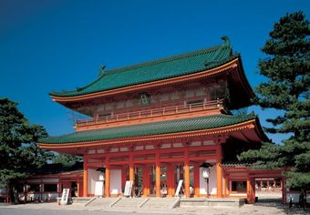

平安遷都1100年を記念して、1895年に創建された。大極殿、応天門をはじめ９世紀の正庁を８分の５で再現した朱塗りの建築が最大の見もの。また、約３万㎡の広大な庭園は近代の庭園の傑作とされ、四季折々の風情が楽しめる。毎年10月22日に行われる時代祭では、京都の歴史上の人物に扮した人びとによるきらびやかな行列が見られる。戻り
David Felipe Rico HernandezUniversidad Nacional de Colombia